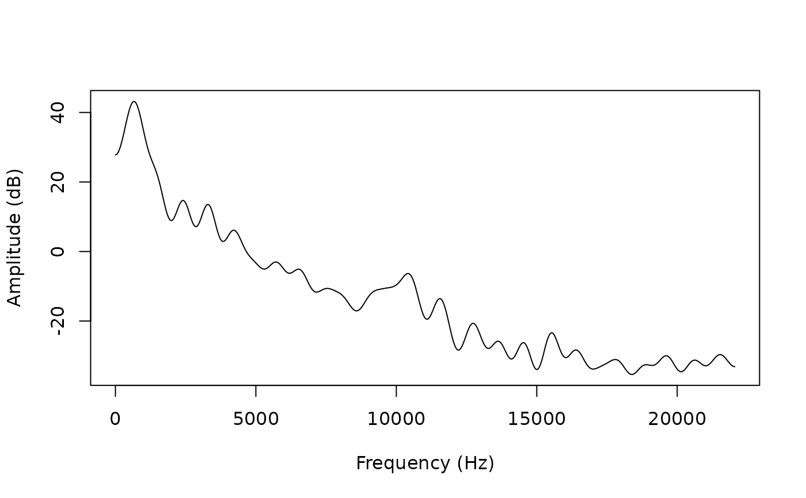

Track cepstrally-smoothed spectrum
trk_css_spectrum.RdComputes a short-term power spectrum smoothed by liftering in the cepstral
domain, using the libassp C library (Scheffers 2012)
. Cepstral
smoothing suppresses spectral fine structure (harmonics), leaving the vocal
tract envelope; prefer trk_css_spectrum over trk_dft_spectrum
when a smooth spectral envelope is needed without LP assumptions.
Usage
trk_css_spectrum(
listOfFiles,
beginTime = 0,
centerTime = FALSE,
endTime = 0,
resolution = 40,
fftLength = 0,
windowShift = 5,
numCeps = 0,
window = "BLACKMAN",
toFile = TRUE,
explicitExt = "css",
outputDirectory = NULL,
assertLossless = NULL,
logToFile = FALSE,
keepConverted = FALSE,
convertOverwrites = FALSE,
verbose = TRUE
)Arguments
- listOfFiles
Character vector of audio file paths. Any format supported by av is accepted; non-native inputs are transcoded automatically.
- numCeps
Integer. Number of cepstral coefficients used for liftering. Default 0 sets this to sample rate in kHz + 1 (minimum 2).
- beginTime
Start time for the extracted portion in seconds. Default: NULL (beginning of signal). Note: uses
beginTime/endTime(seconds) matching DSP function conventions, unlikeread_audio()which usesbegin/end.- centerTime
Numeric or logical. Single-frame analysis time point in seconds; overrides
beginTime,endTime, andwindowShift. DefaultFALSE.- endTime
The end time of the section of the sound files that should be analysed (in seconds). Use 0 for end of file.
- resolution
Numeric. Target FFT frequency resolution in Hz; the FFT length is set to the smallest power-of-2 meeting this target. Default 40.0.
- fftLength
Integer. Explicit FFT length in points; overrides
resolution. Default 0 (useresolution).- windowShift
Numeric. Frame shift in milliseconds; sets output frame rate (
1000 / windowShiftHz). Default 5.0 ms (200 Hz). Must be strictly less than 32 ms (the 512-sample analysis window at 16 kHz). Values other than the training default (5 ms) may slightly reduce accuracy.- window
Character. Analysis window function type. Default
"BLACKMAN". See AsspWindowTypes for supported types.- toFile
Logical. If
TRUE, write SSFF output files and return the count written. IfFALSE, return anAsspDataObj(single file only). DefaultTRUE.- explicitExt
By default, a character "d" will be prepended to the file name suffix when writing the output to file. The user can also specify an explicit extension which will be used instead.
- outputDirectory
The directory where the slice file should be stored. If not defiled (NULL), the sparse slice file will placed in the same folder as the media file.
- assertLossless
Character vector of additional file extensions to treat as losslessly encoded.
- logToFile
Logical. Write processing log to a file in
outputDirectoryrather than the console. DefaultFALSE.- keepConverted
Logical. Retain intermediate transcoded files. Default
FALSE.- convertOverwrites
Logical. Allow transcoding to overwrite existing files. Default
FALSE.- verbose
Logical. Show a progress bar (sequential path) or a progress-aware parallel apply (
pbapply/pbmcapply, if installed).
Value
If toFile = FALSE: an AsspDataObj with track:
CSS[dB]REAL32, dB, n_frames x (FFT_length/2 + 1) columns. Cepstrally-smoothed power spectral amplitude from 0 Hz to the Nyquist rate.
Frame rate: 1000 / windowShift Hz (default 200 Hz).
If toFile = TRUE: integer count of files written, returned invisibly.
Details
numCeps controls the number of cepstral terms retained before
back-transforming; lower values give a smoother envelope. The FFT size is
governed by resolution (or overridden by fftLength).
Examples
# get path to audio file
path2wav <- list.files(
system.file("samples", "sustained", package = "superassp"),
pattern = glob2rx("a1.wav"), full.names = TRUE)
# calculate cepstrally smoothed spectrum
res <- trk_css_spectrum(path2wav, toFile=FALSE)
#> Applying `method(trk_css_spectrum, class_character)()` to 1 recording
resolution <- attr(res,"origFreq") / ncol(res[[1]])
# plot spectral values at midpoint of signal
plot(y=res[["CSS[dB]"]][400,],
x=seq(1,ncol(res[[1]]),1)* resolution,
type='l',
xlab='Frequency (Hz)',
ylab='Amplitude (dB)')
